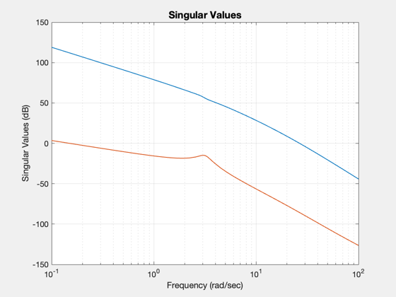
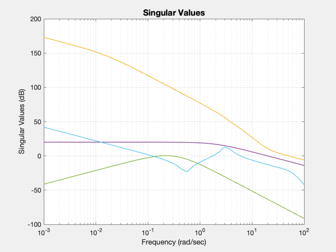
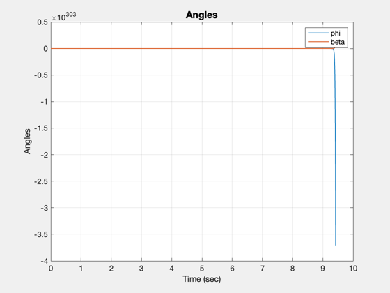

Demonstrate linear quadratic regulator with loop transfer recovery.
------------------------------------------------------------------------
Reference: Stevens, B.L., Lewis, F.L. Aircraft Control and Simulation
John Wiley & Sons, 1992, pp. 521-535.
------------------------------------------------------------------------
See also AC, F16, @statespace/statespace.m, C2DZOH, LFBal, LQC, ND2SS,
Plot2D, Rename
------------------------------------------------------------------------
Contents
F16 lateral dynamics including actuator dynamics
g = F16('g lateral');
Frequency vector
w = logspace(-3,2);
Add integrators and balance the low frequency singular values
LFBal( g, 1 );
g = LFBal( g, 1 );
Rename('Plant Low Frequency Balanced')

Create the high frequency limit which is 1/m(w)
[a, b, c, d] = ND2SS(20, [1 2] );
gMInv = statespace( a, b, c, d, 'm inverse' );
Create the low frequency limit
a = 0.31464;
[a,b,c,d] = ND2SS( [1 0]/3.7, [1 3*a 3*a^2 a^3]);
gGust = statespace( a, b, c, d, 'gust' );
For the estimator
t = [];
t.qE = diag([0.01 0.01 0.01 0.01 0 0 1 1]);
t.rE = eye(2);
Robustness limits
t.gHigh = gGust;
t.gLow = gMInv;
Adjustable parameter to recover robustness
t.rho = sqrt(1e-11);
t.q0 = 0;
t.w = w;
gC = LQC( g, t, 'lqgltro' );
Closed loop eigenvalues
ans =
-0.42264 + 3.0634i
-0.42264 - 3.0634i
-3.6152 + 0i
-0.016303 + 0i
-20.2 + 0i
-20.2 + 0i
0 + 0i
0 + 0i
-243.77 + 641.07i
-243.77 - 641.07i
-661.23 + 292.32i
-661.23 - 292.32i
-24.166 + 54.277i
-24.166 - 54.277i
-53.965 + 18.421i
-53.965 - 18.421i

Do the step response
dT = 0.001;
[aP,bP,cP,dP] = getabcd(g);
[aC,bC,cC] = getabcd(gC);
[aP,bP] = C2DZOH(aP,bP,dT);
[aC,bC] = C2DZOH(aC,bC,dT);
nSim = 10/dT;
x = zeros(length(aP),1);
y = zeros(2,nSim);
t = linspace(0,(nSim-1)*dT,nSim);
xC = zeros(length(aC),1);
for k = 2:nSim
y(:,k) = cP*x;
uC = cC*xC;
xC = aC*xC + bC*(y(:,k) - [1;0]);
x = aP*x + bP*uC;
end
Plot2D(t,y,'Time (sec)','Angles');
legend('phi','beta')
